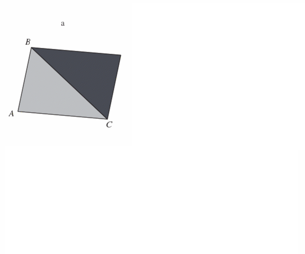

Unconstrained optimization: line search and trust region methods
Constrained optimization: theory and methods
Constrained optimization: modeling framework
Structural estimation
Agenda
Today we begin exploring one of the most important methods in numerical methods: optimization
We start with an introduction and general aspects of numerical optimization
Then, we will cover basic derivative-free optimization algorithms
Main references for today
Miranda & Fackler (2002), Ch. 4
Judd (1998), Ch. 4
Nocedal & Writght (2006), Ch. 2
Lecture notes from Ivan Rudik (Cornell) and Florian Oswald (SciencesPo)
Optimization problems
Optimization problems are ubiquitous in economics. Examples?
Agent behavior
Consumer utility maximization
Firm profit maximization
Social planner maximizing welfare
Econometrics
Minimization of squared errors (OLS)
Minimization of empirical moment functions (GMM)
Maximization of likelihood (MLE)
In this unit, we will review the fundamentals of optimization and cover the main algorithms in numerical optimization
Fundamentals of unconstrained optimization
Optimization setup
We want to minimize an objective function \(f(x)\)
\[\min_x f(x)\]
where \(x \in \mathbb{R}^n\) is a real vector with \(n \ge 1\) components and \(f : \mathbb{R}^n \rightarrow \mathbb{R}\) is smooth
In unconstrained optimization, we impose no restrictions on \(x\)
Optimization setup
We will focus on minimization problems
That’s because the optimization literature and programming packages usually frame optimization as minimization
But it’s simple to convert minimization into maximization problem. How?
Flip the sign of \(f(x)\)!
\[
\min_x f(x) \Leftrightarrow \max_x g(x)
\]
where \(g(x) = -f(x)\)
Optimization solutions: global vs. local optima
A point \(x^*\) is a global minimizer (or optimum) of \(f\) if
\[ f(x^*) \le f(x) \;\; \forall x \in \mathbb{R}^n\]
Since we can’t evaluate the function at infinite points, finding global optima is generally a difficult problem
We can’t be sure if the function suddenly rises between two points we evaluate
Most algorithms can only find local optima
Optimization solutions: global vs. local optima
A point \(x^*\) is a local minimizer (or optimum) of \(f\) if there is a neighborhood \(\mathcal{N}\) of \(x^*\) such that
\[ f(x^*) \le f(x) \;\; \forall x \in \mathcal{N}\]
A neighborhood of \(x^*\) is an open set that contains \(x^*\)
We call \(x^*\) a strict local minimizer if \(f(x^*) < f(x) \;\; \forall x \in \mathcal{N}\)
Identifying local optima
A first approach to checking whether a point is a local optimum is to evaluate the function at all points around it
But if \(f\) is smooth, calculus makes it much easier, especially if \(f\) is twice continuously differentiable
We only need to evaluate the gradient\(\nabla f(x^*)\) (first derivative) and the Hessian\(\nabla^2 f(x^*)\) (second derivative)
There are four key theorems to help us1
Identifying local optima
Theorem 1: First-Order Necessary Conditions
If \(x^*\) is a local minimizer and \(f\) is continuously differentiable in an open neighborhood of \(x^*\), then \(\nabla f(x^*) = 0\)
If \(n = 1\), this means that \(f^{\prime}(x^*) = 0\)
Note that this is only a necessary condition
So, we can look for points where the first derivative is zero (with rootfinding)
But, once we find them, we can’t be sure yet if these points indeed are local minimizers
Identifying local optima
Theorem 2: Second-Order Necessary Conditions
If \(x^*\) is a local minimizer of \(f\) and \(\nabla^2 f\) exists and is continuously differentiable in an open neighborhood of \(x^*\), then \(\nabla f(x^*) = 0\) and \(\nabla^2 f(x^*)\) is positive semidefinite
If \(n = 1\), this means that \(f^{\prime \prime}(x^*) \geq 0\), i.e., the function is locally convex
Positive semidefiniteness is the multidimensional analogous of convexity in 1D
A matrix \(B\) is positive semidefinite if \(p^\prime B p \geq 0\) for all \(p\)
For maximization problems, we check whether \(\nabla^2 f(x^*)\) is negative semidefinite
Identifying local optima
Theorem 3: Second-Order Sufficient Conditions
Suppose \(\nabla^2 f\) is continuous in an open neighborhood of \(x^*\) and that \(\nabla f(x^*) = 0\) and \(\nabla^2 f\) is positive definite. Then \(x^*\) is a strict local minimizer of \(f\)
Note that these are sufficient conditions, not necessary conditions
For example, \(f(x) = x^4\) has a local minimizer at \(x^* = 0\). But this point does not satisfy the 2nd-order sufficient conditions
Conditions for global optima
Another theorem can help us characterize global optima
Theorem 4: Second-Order Sufficient Conditions for Global Optima
When \(f\) is convex, any local maximizer \(x^*\) is a global minimizer of \(f\). If in addition \(f\) is differentiable, then any point \(x^*\) at which \(\nabla f(x^*) = 0\) is a global minimizer of \(f\)
If the function is globally convex, any local minimizer we find is also a global minimizer
Optimization algorithms
Optimization algorithms
Optimization problems have many similarities to problems we’ve already seen in the course
FOCs of an unconstrained optimization problem are similar to a rootfinding problem
FOCs of a constrained optimization problem are similar to a complementarity problem
Optimization algorithms
We typically want to find a global optimum of our objective function \(f\)
Typically, analytic problems are set up to have a unique minimum so any local solver can generally find the global optimum
But many problems in Economics don’t satisfy the typical sufficiency conditions for a unique minimum (strictly decreasing and convex), such as
Games with multiple equilibria
Concave state transitions
Certain types of estimation procedures
Optimization algorithms
We make two initial distinctions between solvers (i.e., optimization algorithms):
Local vs global: are we finding an optimum in a local region, or globally?
Most solvers search local optima
Derivative-using vs derivative-free: do we want to use higher-order information?
In this course, we’ll focus on local solvers
Global solvers are usually stochastic or subdivide the search space and apply local solvers
Common global solvers: genetic algorithms, simulated annealing, DIRECT, and Sto-go
Optimization algorithms
How do we find a local minimum?
Do we need to evaluate every single point?
Optimization algorithms typically have the following set up:
Start at some \(x_0\)
Work through a series of iterates \(\{x^{(k)}\}_{k=1}^\infty\) until it “converges” with sufficient accuracy
If the function is smooth, we can take advantage of that information about the function’s shape to figure out which direction to move in next
Solution strategies: line search vs. trust region
When we move from \(x^{(k)}\) to the next iteration, \(x^{(k+1)}\), we have to decide
Which direction from \(x^{(k)}\)
How far to go from \(x^{(k)}\)
There are two fundamental solution strategies that differ in the order of those decisions
Line search methods first choose a direction and then select the optimal step size
Trust region methods first choose a step size and then select the optimal direction
We’ll see the details of each strategy later. Let’s start with two relatively simple, derivative-free methods
Derivative-free optimization: Golden search
Similar to bisection, golden search looks for a solution of a one-dimensional problem over smaller and smaller brackets
We have a continuous one dimensional function, \(f(x)\), and we want to find a local minimum in some interval \([a,b]\)
Derivative-free optimization: Golden search
Select points \(x_1,x_2 \in [a,b]\) where \(x_2 > x_1\)
Compare \(f(x_1)\) and \(f(x_2)\)
If \(f(x_1) < f(x_2)\), replace \([a,b]\) with \([a,x_2]\)
Else, replace \([a,b]\) with \([x_1,b]\)
Repeat until a convergence criterion is met
Replace the endpoint of the interval next to the evaluated point with the highest value
\(\rightarrow\) keep the lower evaluated point in the interval
\(\rightarrow\) guarantees that a local minimum still exists
Derivative-free optimization: Golden search
How do we pick \(x_1\) and \(x_2\)?
Achievable goal for selection process:
New interval is independent of whether the upper or lower bound is replaced
Only requires one function evaluation per iteration
The value of \(\alpha_2\) is called the golden ratio, from where the algorithm gets its name
Golden search in practice
Let’s write a function to perform the golden search algorithm golden_search(f, lower_bound, upper_bound), then use it to find the minimizer of \(f(x) = 2x^2 - 4x\) between -4 and 4.
Steps:
Calculate points \(x_1,x_2 \in [a,b]\)
\(x_1 = a + \frac{3-\sqrt{5}}{2} (b-a)\) and \(x_2 = a + \frac{\sqrt{5} - 1}{2} (b-a)\)
Compare \(f(x_1)\) and \(f(x_2)\)
If \(f(x_1) < f(x_2)\), replace \([a,b]\) with \([a,x_2]\)
Golden search is nice and simple but only works in one dimension
There are several derivative free methods for minimization that work in multiple dimensions. The most commonly used one is the Nelder-Mead (NM) algorithm
NM works by first constructing a simplex: we evaluate the function at \(n+1\) points in an \(n\) dimensional problem
It then manipulates the highest value point, similar to golden search
Derivative-free optimization: Nelder-Mead
There are six operations:
Order: order the value at the vertices of the simplex \(f(x_1)\leq \dots \leq f(x_{n+1})\)
Centroid: calculate \(x_0\), the centroid of the non - \(x_{n+1}\) points
Derivative-free optimization: Nelder-Mead
Reflection: reflect \(x_{n+1}\) through the opposite face of the simplex and evaluate the new point: \(x_r = x_0 + \alpha(x_0 - x_{n+1})\), \(\alpha > 0\)
If this improves upon the second-highest but is not the lowest value point, replace \(x_{n+1}\) with \(x_r\) and restart
If this is the lowest value point so far, expand
If \(f(x_r) > f(x_n)\), contract

Derivative-free optimization: Nelder-Mead
Expansion: push the reflected point further in the same direction
Contraction: Contract the highest value point toward the middle